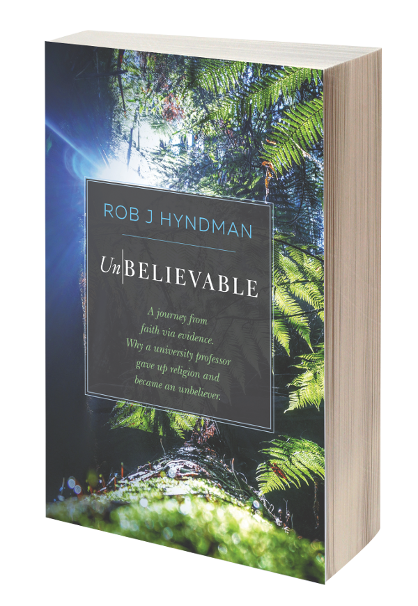

Unbelievable

Cover
I was a Christian for nearly 30 years, and was well-known as a writer and Bible teacher within the Christadelphian community. I gave up Christianity when I no longer thought that there was sufficient evidence to support belief in the Bible.
This is a personal memoir describing my journey of deconversion. Until a few years ago, I was regularly speaking at church conferences internationally, and my books are still used in Bible classes and Sunday Schools around the world. I even helped establish an innovative new church, which became a model for similar churches in other countries. Eventually I came to the view that I was mistaken, and that there was little or no evidence that the Bible was inspired or that God exists. In this book, I reflect on how I was fooled, and why I changed my mind.
The whole book is freely available online. But if you prefer a print or offline version, you can buy a copy via one of the links below.
Preface
I was a Christadelphian1 for nearly 30 years, from age 16 until I resigned in July 2013 when I no longer thought that there was sufficient evidence to warrant belief in the Bible or Christianity. This book explains why I changed.
Many of my Christadelphian friends have asked why I no longer believe, and I want to give them the answer they deserve. After many years of speaking at Christadelphian meetings in Australia and in several other countries, there are a lot of people who have heard me talk about my faith, and will have wondered what has happened. Even more people have read my books, including The Way of Life (Hyndman, 2002), in which I have given reasons to believe the Bible’s message. Some readers have written to me asking what I now think about these “reasons”. This book is my attempt to address these questions and to explain why I now think I was wrong.
This is a personal account. I am not attempting to write a comprehensive guide to the arguments against God and the Bible. There are already good books which do that. At the end, I list some that I found helpful and which are much more comprehensive than this memoir.
I have divided my thoughts into three parts. Part A provides some background and reflects on the nature of faith and evidence, and whether faith should be affected by evidence. In Part B, I give a brief account of the things that made a difference to me, and a discussion of the arguments I have used in the past as reasons to believe in the Bible. Part C contains some of the hundreds of emails and letters I have received since I announced my unbelief, along with a few of my own reflections on them.
Each chapter is illustrated with one of my photographs, mostly taken in the past two years. There is a connection between the photograph and chapter (in my mind at least), although it may not always be obvious.
Before I resigned as a member of the Christadelphian community, I had written a blog2 for a couple of years exploring some ideas about the Bible and how to interpret it appropriately. My purpose in writing the blog was to explore areas of faith, belief and tradition that I thought needed some re-examination. I had no agenda or predetermined endpoint; I simply wanted to think about the Bible, and Christian (especially Christadelphian) beliefs, and write about it. However, through my musings on faith, I eventually lost my faith. This book describes a little of that journey.
I am grateful to a few friends who read an early draft of this book and provided helpful feedback and suggestions. In particular, Josh Barratt, Dave Hyndman, Naomi Hyndman, Nathan Islip, Jake Loveday, Sally Morgan and Trevor Nicholls all made suggestions that helped me clarify my thinking and writing. But most of all, I want to thank my wonderful wife, Leanne. She not only provided an honest critique of my book, she helped me through the most difficult time of my life with great courage, unfailing support and endless love. Thank you Leanne. You mean the world to me.
Christadelphians are a small, exclusive Christian denomination with about 60,000 members worldwide. They are distinctive for having no paid clergy, for their enthusiasm for Bible reading and study, and for their rejection of several mainstream Christian doctrines.↩︎
Some material from my blog entries has been reworked into chapters for this book.↩︎